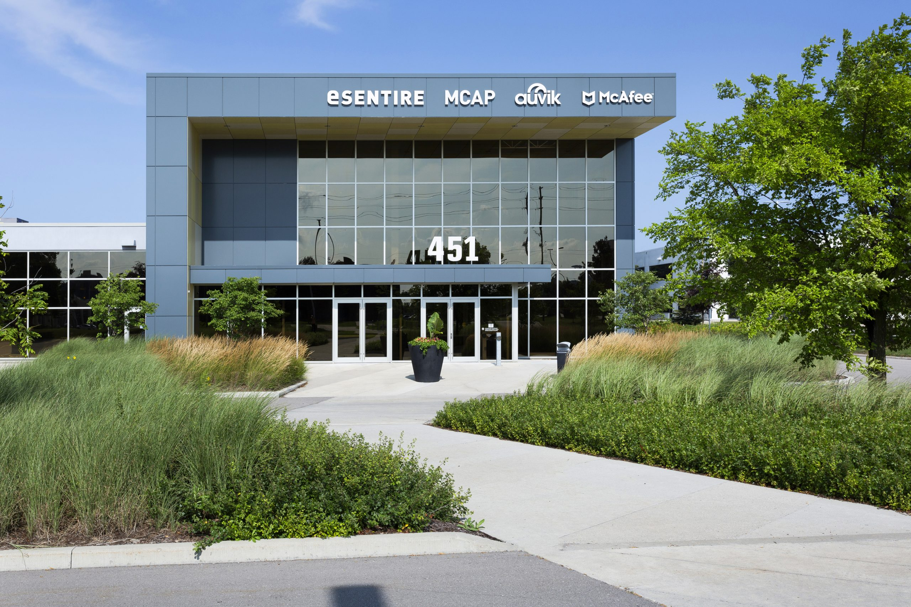

INTRODUCTION
Welcome to my Work Term Report. This page outlines my experience working at NCR as
a front-end software developer for a second term, from May 1, 2024 - August
28, 2024.
My name is Elman Islam, and I am a University of Guelph software engineering co-op student in my 4th
year.
During this work term, I continued learning about front end development and the process that goes behind
building websites and user interfaces.
In addition to learning Jira and JReact, I began to expand on more of my previous skills by becoming more
proficient in code reviews,
figma designs, Angular, and several other tools.
It is my goal to explain the numerous ways that this work term has made me grow as both a Software
Engineering student and as a future employee in the workforce after graduation.
In this website page that I wrote, you can learn about my experience at the workplace, what my goals
were, and the skills I gained. Use the navigation
bar above to read different topics. You can go to my main website and view other work term reports by
clicking the logo in the top left.
ABOUT THE COMPANY

451 Phillip Street, Waterloo, Ontario, the office where I worked at
NCR is an American company founded in 1884 as National Cash Register. They focus in the
area of financial
transactions with Point of Sale (POS) systems, cheque imaging, and bank deposit software. They offer many
different financial solutions for different industries; such as banking, restaurants, retail, and travel
to
name a few of them. Their offices are located all over the world; including (but not limited to) the
United
States, Canada (in Mississauga, Quebec, and Waterloo), France, South Africa, Japan, Australia, and
Brazil.
One of the slogans of the company is "Turning Everyday Transactions into Meaningful Interactions" and "We
turn everyday transactions into meaningful relationships."
As a member of a front-end development team for one of the company's web banking technology tools,
my role was to develop user interface (UI) components, reproduce and fix defects,
develop and review code with peers, and communicate my development progress and findings with my team.
GOALS
My first goal was to improve the speed and quality at which I deploy bigger, grander UI
components. Since this was my second work term at the company,, I was getting assigned more often tickets
that require developing ui components (which are known as 'EPICS' tickets) based on given designs on
Figma that will be used by the company's banking website. This means collecting feedback from coworkers
and reviewing how closely accurate my work is to the original design that was given to me.
I did not anticipate that the EPIC tickets would consist of large features and components that are
typically contributed to by several developers. Due to this, it took me significantly longer than
expected to draft, code, and test each of the many sub-components I had to design per EPIC ticket. With
that being said, I found I managed to make progress with slightly quicker completion and fewer mistakes
each time I worked on a new ui component. It is likely that I will work on tickets of a similar style in
future employments, so I am glad I made this as a goal.
My second goal was to guide and mentor a fellow co-op intern in the team. This is the
first co-op I have worked where I will be working as a mentor. The person I mentored is a
fellow software engineering co-op from the University of Guelph. I wanted to learn how to
teach and cooperate alongside a coworkers with/using the basic skills I have learned during my previous
work term. I answered the co-op intern's questions and helped her quickly develop the skills she needed,
such as debugging, code reviewing, and typescript development. I found that my fellow co-op intern slowly
asked less and less questions over time, and I took this as a sign of her quickly adapting to the job and
becoming familiar with the development environment. This was quicker than it took me to reach that
level of confidence in my first four months. I found that she became comfortable and confident
progressively through her first few weeks, and said that my ability to thoroughly answer her questions
helped her significantly. I'm glad I was able to be an impactful mentor.
My third goal was to support my team more often by conducting more code
reviews and giving suggestions to other developers' PRs (pull requests). I learned the importance of code
reviews during the beginning of this term because they help improve the efficiency and reduce redundancy
of the code for the company's repositories, and make the code much less prone to causing bugs or errors.
Code reviews should follow a criteria when making suggestions for a new PR. I learned that
there are a variety of principles to follow when conducting a code review:
- understanding all the possible flows that the PR's functions can go through
- check for variable naming conventions and spelling
- check for logical errors or anything that could lead to a run-time error
- Find lines or functions that may be redundant, or can be written in a simpler fashion
I found that the complexity of PR's I reviewed ranged drastically. If it was a PR for a bug defect then
usually the code would be trivial because bugs tend to require just a few lines to fix. If the PR was for
making a new UI component, then I had a more difficult time wrapping my head around the
new code I was looking at. For these kinds of PR's, my idea would be to look at each function or piece of
code individually, and simply criticize the logic of these pieces. This was my approach when reviewing
several PR's, and I feel more skilled as a result
of involving myself with more code reviews.
JOB DESCRIPTION
Front-end Development
A front-end developer specializing in React Native and TypeScript typically works on developing mobile
and web applications for various platforms.
My responsibilities were almost identically the same to my last work term at NCR, and they included
collaborating with designers and backend developers to implement user
interfaces, integrating APIs, and ensuring
the application's responsiveness across different devices. I wrote clean, maintainable code using React
Native components and TypeScript to
enhance code readability and scalability. Daily activities might involve writing and debugging code,
optimizing performance, conducting code reviews,
and staying updated with the latest React Native and TypeScript developments to ensure the best practices
are implemented in the projects I worked on.
The actual project I was working on was a banking website, where clients or businesses would send
transactions and payments to different accounts. At
the beginning of my co-op, I would be given simple defect tickets on Jira, such as fixing an incorrect
label for a button, making a box align properly with a sentence of text,
fix a broken button that does not redirect to the correct page, etc. As I progressed, I started handling
new kinds of tickets called 'epics'; these are not just regular defects
but are actually components and new features that have been planned out, and usually contain subtickets.
A subticket is a subtask for a parent ticket; for example, if an epic ticket
was for making a profile settings page, then a subticket or subtask could be viewing and changing the
user's current email. A lot of what I learned in school takes part in designing the epic ticket.
It involves creating user stories and making flow paths that show how a user would navigate or interact
with a component. This is important because developers should be much more than just code monkeys;
they should be able to understand what a component will be used for, how it will be interacted with, and
what its limitations are, and none of these actually have anything to do with code. So for the
latter half of my work term, I brainstormed ideas by asking myself these questions when I was preparing
to make a new ui component for a subtask for an epic ticket. I only started coding after
I had a thorough plan and understanding of what I needed to do.
In this specific work term, I delved more into code reviewing. As mentioned in one of my goals,
code reviews follow a criteria that allows components or written tests to be more maintainable and less
prone to bugs. The team I worked with put a lot of emphasis into these code reviews, and would even hold
meetings every few months to refresh everyone's minds on how to conduct a review. Without these reviews,
there would be a lot more inconsistent code that could be infested with undiscovered bugs. I learned
about code reviewing in school and kept a checklist from one of my courses that came in quite useful for
these activities. As a result, I spent a considerable amount of time writing comments or reading code. I
think this is actually quite an important skill because I believe a developer should be able to read a
file
and quickly understand its function and purpose after a single quick read.
One last part of my job that often gets underappreciated or looked over is test design. It is
quite common for as much as 70% of a company's repository to be made
up of testing code. As someone who rigorously performed and worked with test cases in previous co-ops, I
thoroughly understood the importance of creating useful test cases,
and so I often had to write my own unit tests for new components in epic tickets. When writing a unit
test, you have to make sure that the code quality of what you are testing
is of high quality (no redundant lines, messy flowpoints, has clean naming conventions, etc.), and that
the test thoroughly makes sure the component cannot break.
CONCLUSION
NCR was an excellent company to work for in my final two co-op workterms of my undergraduate degree.
Working at NCR helped improve my skillset by providing me experience in yet another field I can apply my
degree towards (financial transactions), and demonstrating to future employers that I can take on any
task with new technologies and implement them extremely effectively. I have further
strengthened my proficiency in tools I learned in my last term, such as JReact, Jira, debugging, and test
design. Additionally, my improvement in teamwork and mentoring has made me more of a team player by
increasing the learning pace of my fellow co-op intern and by reviewing PR's thoroughly.
When I graduate, I would love to come back to this company if possible. I am certain that if I work in
any software development role in the future, the skills I learned and enhanced will most certainly be
reliable.
ACKNOWLEDGEMENTS
Once again, I would also like to thank my coworkers Jagruti and Ankita. Both of
them were
my main source of help and guidance in these past 8 months. Thanks to them I was able to become much more
proficient at not just React
but at being a better code developer in general, and I worked at a much more
efficient pace after learning from them. I would like to also thank my fellow co-op, Adina Mubashir, who
I had a great time helping and working with. Finally, I would like to thank my supervisors
Nandini
and Malathi, who I could always reach out to in case of any issues. They always kept in touch
with me and
made sure I was doing ok or asked if I needed any help or had any blockers. I'm glad I had the
fortune of working with these kind developers and supervisors, and I hope I get to work with
similar teams in the future.